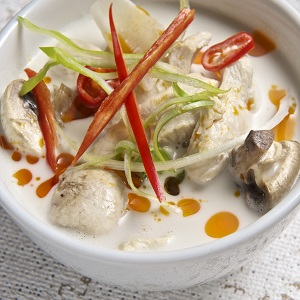
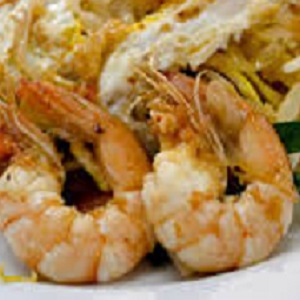
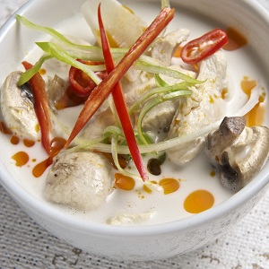
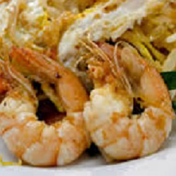

Thai Cooking

Thai food is the national cuisine of Thailand.
Thai cooking places emphasis on lightly prepared dishes with strong aromatic components and a spicy edge.
Thai food demonstrates intricacy, attention to detail, texture, colour and taste.
The use of ingredients with medicinal benefits, as well as good flavour is also a characteristic of
Thai cooking.
In 2017, seven Thai dishes appeared on a list of the "World's 50 Best Foods".
They were: tom yam goong (4th), pad Thai (5th), som tam (6th), massaman curry (10th), green curry (19th),
Thai fried rice (24th) and Som Tum Pu Pla Ra (36th).
Thai cuisine is more accurately described as five regional cuisines, corresponding to the five main regions of Thailand: Bangkok, Central Thai, Isan or northeastern Thai, Northern Thai and Southern Thai.
Click on the link below provide to see some Thai Curry recipes:

 


